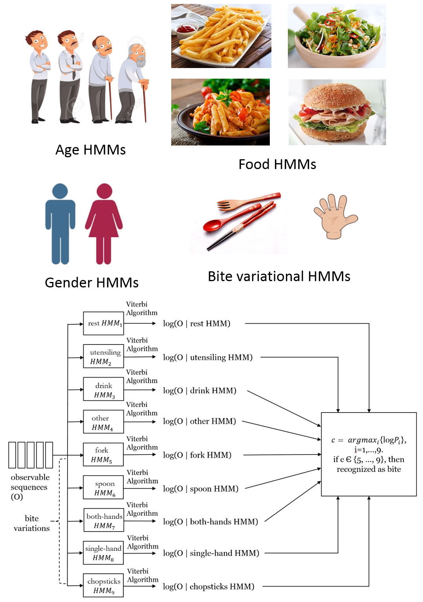

 |
Using Contextual Information to Improve Hidden Markov Model Recognition of Wrist Motions During Eating Activities This dissertation considers the problem of recognizing wrist motions during eating. The wrist motion is tracked using accelerometer and gyroscope sensors worn in a watch-like device. The goal is to recognize a set of gestures that commonly occur during eating. Hidden Markov models (HMMs) are used to recognize these motions. We proposed that the demographics (gender, age, ethnicity), utensil being used, or types of foods being eaten, may cause variations in the wrist motions while eating. Several variations on this concept are explored and compared to baseline. Specifically, we consider if foreknowledge of the demographics (gender, age, hand used, ethnicity, BMI), meal level variables (utensil used for eating, food consumed), language variables (variations of bite, utensiling and other), and clustering based method can improve recognition accuracy. We investigate this hypothesis by building HMMs trained for each of these contextual variables, and compare accuracy against baseline HMMs (HMM-S) built for each gesture type. Results show that the highest accuracy of all gestures and intake gestures in contextual HMMs is 86.4% and 91.7%, improved by 1.2% and 6.7% over HMM-S, respectively. We also investigate the contextual variables along with one gesture history. It achieved all gestures accuracy up to 88.9% and intake gestures accuracy up to 93.0%, with 0.6% decreased for all gestures accuracy and 1.5% intake gestures accuracy improved over HMM-1. dissertation / slides
|